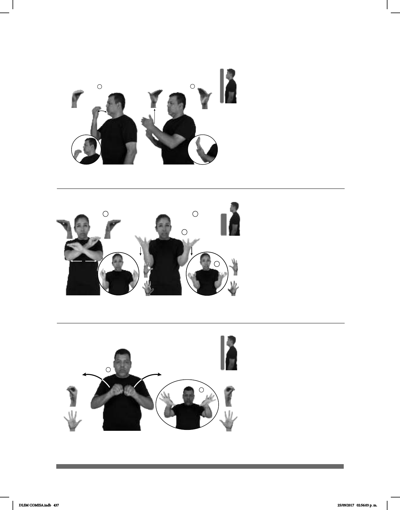

437
Seña: SS
Seña que pasa de O.9 a 5.12
Las palmas inician hacia abajo
y terminan hacia arriba.
Del pecho a la cintura.
Movimiento: Las manos parten de un
mismo punto y luego se abren hacia los
lados.
boca abierta mostrando los dientes.
sust. m. Región cuyo suelo es
particularmente seco y arenoso por lo que
tiene muy poca o ninguna población vegetal,
animal y humana; no hay ríos, lagos y casi
no llueve.
(O-29) Desierto
(O-30) Difundir
DESIERTO
izquierda
DIFÍCIL VIVIR
Vivir en el desierto es difícil.
Seña: SS
I O.1 y II 5.1
Palmas hacia abajo
con puntas de los dedos hacia el
frente.
A la altura del pecho.
Movimiento: Las manos parten de
un mismo punto y luego se abren
hacia los lados.
Cabeza
atrás, cejas arriba.
v. tr. Hacer que algo
llegue a muchas personas
principalmente a su conocimiento.
NOTICIA RÁPIDO DIFUNDIR YA
La notica se difundió rápidamente.
(O-28) Desayunar
1
/ Desayuno
2
Seña: SC: I. SM; II. SB
I. O.5; II. MD y MB
B-P.7
I. Palma hacia adentro;
II. MD y MB palma hacia adentro.
I. A la altura de la boca; II.
MD y MB a la altura del pecho. MD
sobre MB.
Movimiento: I. La mano se mueve de
muñeca; II. MD recto hacia arriba.
1. v. tr. Tomar la primera
comida del día que generalmente es
ligera y se hace por la mañana. 2. sust.
Primera comida del día generalmente
ligera que se toma por la mañana.
DIARIO pro-YO ESCUELA DESAYUNAR
Yo desayuno en la escuela diario.
DLSM COMISA.indb 437 25/09/2017 02:56:03 p. m.